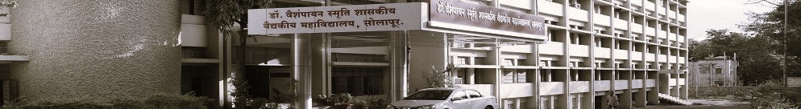

This content is for educational purposes only and does not constitute professional medical advice or diagnosis. Viewing this channel does not establish a doctor-patient relationship; consult a physician for all health concerns. All clinical materials are de-identified for privacy, though viewer discretion is advised for sensitive medical imagery. The department assumes no liability for errors, omissions, or any actions taken based on the information provided.

Home » About Us

About Us
16Path is a novel, web-based learning initiative by the Department of Pathology of Dr V. M. Govt. Medical
College, Solapur that integrates several didactic and graphical learning techniques to enhance the training of
Pathology.
About VMPath

16Path
About 16Path
16Path
Disclaimer
×

×